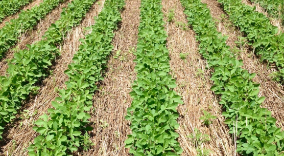
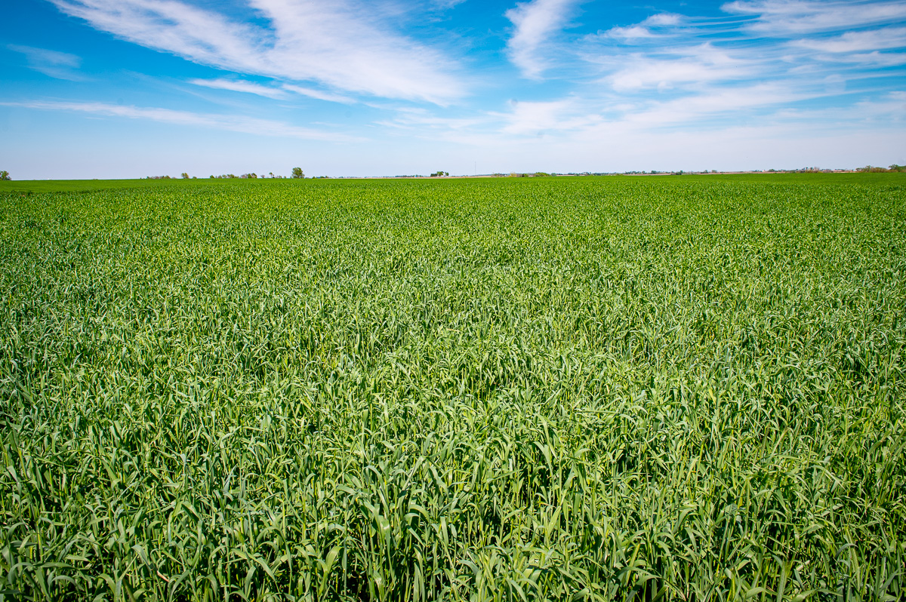
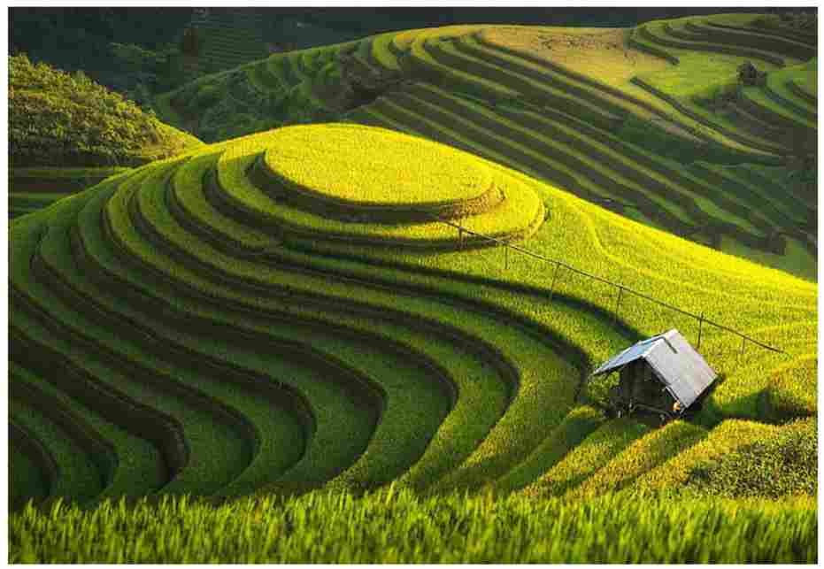
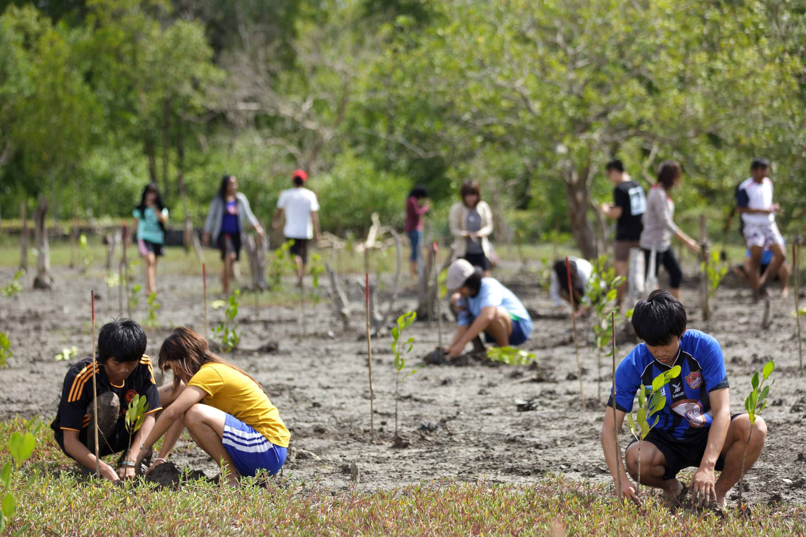
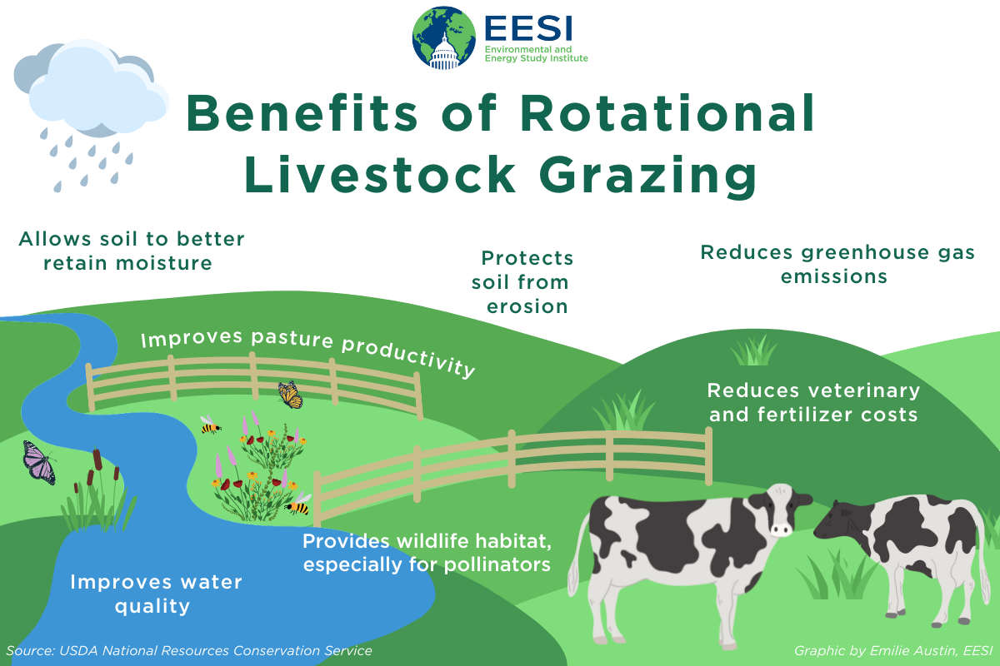
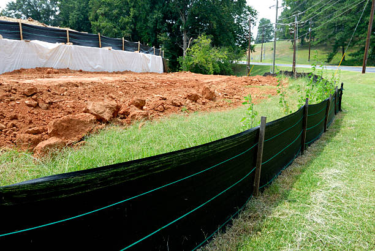
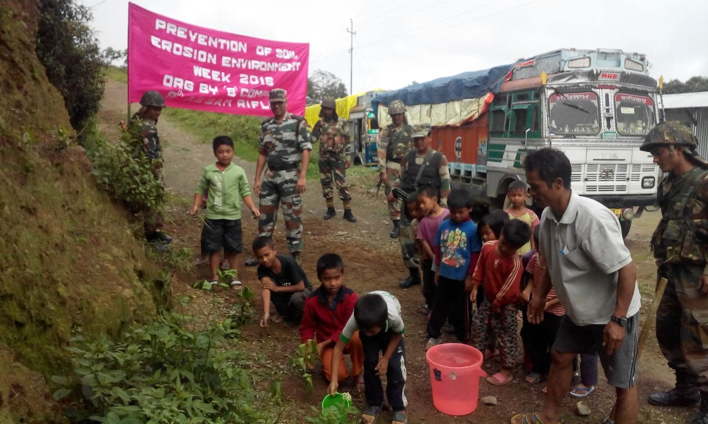

Combating Soil Erosion: Strategies for Sustainable Land Management
Soil erosion, the gradual dislodgement and removal of topsoil by wind or water, is a natural process that has been exacerbated by human activities. This destructive process not only depletes valuable fertile land but also contributes to water pollution, habitat loss, and reduced agricultural productivity.
Effective Prevention Strategies
-
Conservation Tillage
Conservation tillage practices, such as no-till farming and strip-till farming, minimize soil disturbance, leaving crop residues and plant cover intact. This protective layer helps to anchor soil particles, reduce rainwater impact, and suppress wind erosion.
 -
Cover Cropping
Planting cover crops, such as grasses, legumes, or other non-harvested vegetation, during off-seasons provides a protective cover for the soil. Cover crops help to prevent erosion, improve soil structure, and add organic matter.
 -
Terracing
Terracing is a technique involving the creation of stepped landforms on hillsides. These terraces interrupt the flow of water, reducing its erosive power and preventing soil loss.
 -
Reforestation
Reforestation, the planting of trees in previously deforested areas, restores vegetation cover and enhances soil stability. Tree roots anchor soil particles, and their canopy reduces the impact of raindrops and wind.
 -
Sustainable Grazing Practices
Overgrazing can lead to soil degradation and increased erosion. Implementing sustainable grazing practices, such as rotational grazing and proper stocking rates, helps to maintain healthy vegetation cover and protect the soil.
 -
Erosion Control Structures
Erosion control structures, such as sediment fences, silt traps, and erosion blankets, are temporary measures used to prevent soil loss during construction or land development. These structures capture and retain sediment, allowing the soil to settle and preventing its transport by water.
 -
Awareness and Education
Raising public awareness about soil erosion and its consequences is crucial for promoting sustainable land management practices. Educational campaigns, workshops, and community outreach programs can empower individuals and communities to take action and protect their soil resources.

By implementing these prevention strategies and adopting sustainable land management practices, we can effectively combat soil erosion, safeguard our precious agricultural land, and ensure a healthier environment for future generations.